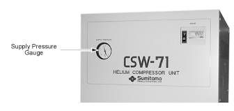

- 00000018WIA30E0BF20GYZ
- id_131067591.2
- Jul 6, 2019 12:17:30 AM
CTI System
Prerequisites
| Required persons | Preliminary requirements | Procedure | Finalization |
|---|---|---|---|
| 1 | Not Applicable | Not Applicable | Not Applicable |
| ||||||||||||
CTI System
About this task
If system static pressure is 225 psig or less, you must add helium to system to bring static pressure to 240 psig. If steady–state dynamic pressure is less than 60 psig, you must add helium to raise pressure to 90 psig, providing static pressure is <240 psig.
Increasing CTI Helium Gas Pressure
Procedure
Decreasing CTI Helium Gas Pressure
About this task
System static pressure should be 235 ±5 psig at 75 °F (24 °C) ambient temperature. If static pressure is above 240 psig, you must remove helium to reduce pressure.
Procedure
- Remove cap from gas charge fitting. See Figure 1.
- Open charge valve slightly to reduce pressure.
- When pressure reaches 235 psig, close charge valve and reinstall cap to gas charge fitter.
Shield Cooler System
Increasing Gas Pressure
About this task
The following procedure purges air and/or contaminants out of the regulator and connecting lines before connecting the line to a new cylinder of certified 99.9995% helium gas, and then adjusts the gas pressure.
Procedure
- Verify the compressor's main power switch is off and that gas pressure
is stable (static pressure). See Figure 3 and Figure 4.Note:
The supply pressure gauge displays static pressure when the compressor is off and high-side dynamic (operating) pressure when the compressor is on.
Figure 3. Compressor Pressure Gauge 
Figure 4. Purging the Gas Charging Tool 
Decreasing Gas Pressure
Procedure
S-1 Magnet P-3 Plug Helium Exhaust Flow Verification
Procedure
Finalization
Finalization
No finalization steps.